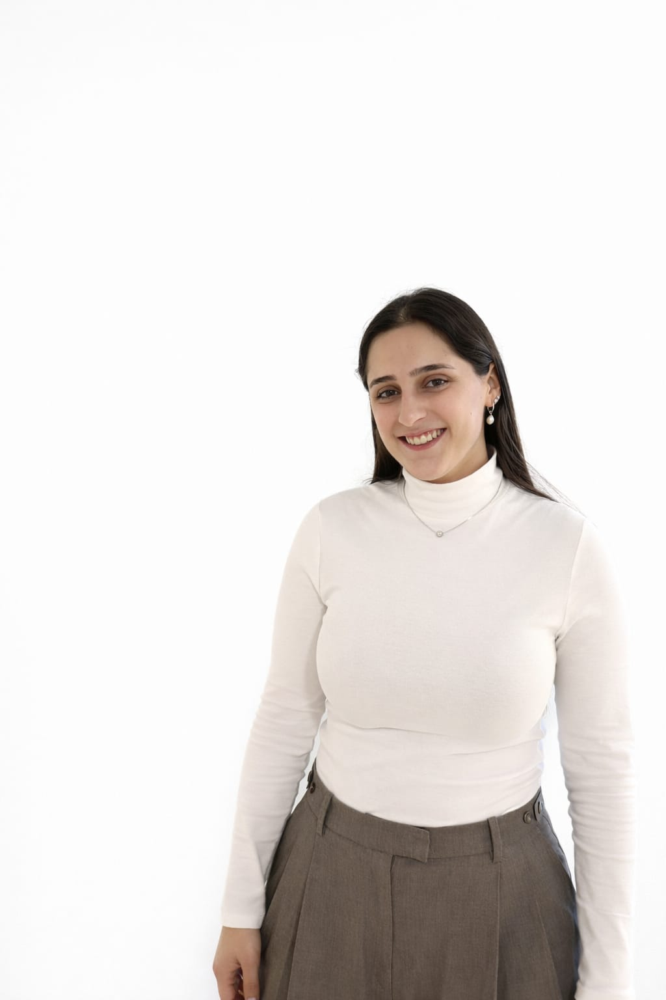

↗
Reinforcement Learning
Studying policies and learning methods for sequential decisions in uncertain environments.
RESEARCH · OPTIMIZATION · INTELLIGENT SYSTEMS
Research Assistant / B.Sc. Student
Exploring how reinforcement learning and optimization can help solve complex decision-making problems.
Industrial Engineering & Management
Ben-Gurion University of the Negev, Israel

01 / RESEARCH
My work connects learning-based methods with structured decision-making and computational experiments.
Studying policies and learning methods for sequential decisions in uncertain environments.
Developing and evaluating computational approaches to complex planning and optimization problems.
Applying algorithmic methods to problems inspired by real-world systems and dynamic environments.
Working under the supervision of Dr. Ayal Taitler ↗ at Ben-Gurion University of the Negev, with a focus on algorithm development, experimentation, and research software.
02 / SELECTED WORK
A selection of research software and technical work. More details will be added as projects become public.
RESEARCH SOFTWARE
Contributing to a Python research codebase for learning and optimization experiments, including configurable runs, results management, action logging, and visualization workflows.
RESEARCH SOFTWARE
Working with stochastic planning and learning code, running computational experiments, and supporting reproducible research workflows.
Research repositories are not linked here unless confirmed public and suitable for sharing.
03 / BACKGROUND
Research, teaching, and leadership experience brought together by an interest in solving challenging problems.
Ben-Gurion University of the Negev · DRIVE Lab
Algorithm development, computational experiments, and research in optimization and decision-making.
Ben-Gurion University of the Negev
Academic assessment and supporting course evaluation.
Entrepreneurship & professional development
Participation in an entrepreneurship-focused program.
Prior organizational leadership roles
Held managerial and instructional positions involving team coordination, personnel responsibility, and operational decision-making.
04 / ABOUT
I am an undergraduate student in Industrial Engineering and Management at Ben-Gurion University of the Negev, specializing in Intelligent Systems.
As a research assistant, I work on computational approaches to decision-making, combining hands-on Python development with experimental analysis. I am especially interested in reinforcement learning and optimization.
Ben-Gurion University of the Negev
Intelligent Systems specialization
GPA 92.78 / 100
05 / CONTACT
Interested in research collaborations, technical projects, or new opportunities? I'd be glad to hear from you.
akerivor1@gmail.com